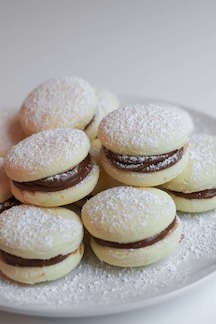

|  | Description"Popular all over Latin America, dulce de leche confections called alfajores come in many varieties. In this popular version, delicate, crumbly butter cookies are sandwiched with a thick layer of dulce de leche before being rolled in coconut. They are petite yet decadent morsels that go particularly well with strong black coffee to cut their creamy richness. You can make the dulce de leche a week ahead (store it in the refrigerator) and the cookies 5 days ahead (store them in an airtight container at room temperature). Once sandwiched together, the cookies will keep in a sealed container in the refrigerator for 3 days, but are best eaten within 24 hours of filling." |
|